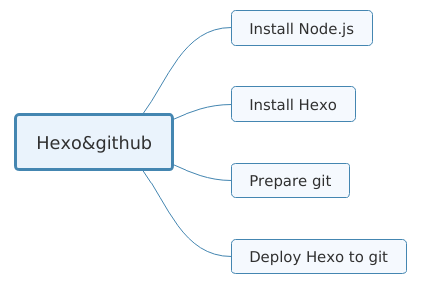
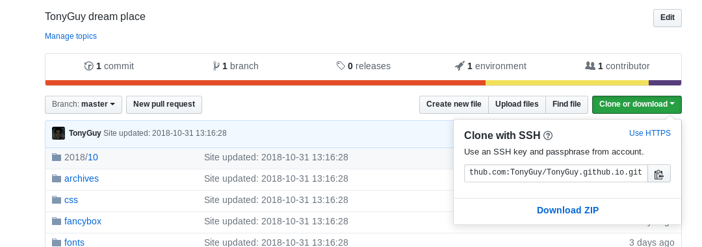
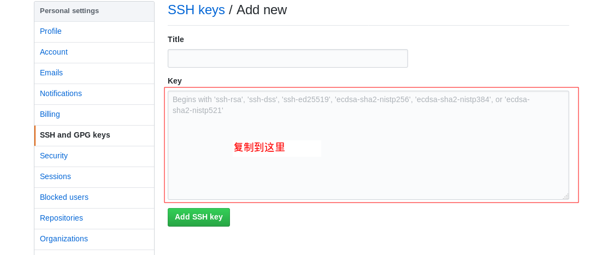

<!DOCTYPE HTML>
<html>
<head><meta name="generator" content="Hexo 3.8.0">
  <meta charset="utf-8">
  <meta http-equiv="pragma" content="no-cache">
  <meta http-equiv="cache-control" content="no-cache">
  <meta http-equiv="expires" content="0">
  
  <title>安装Hexo和部署到Github | Tony Blog</title>
  <meta name="author" content="Tony">
  
  <meta name="description" content="code">
  
  
  <meta name="viewport" content="width=device-width, initial-scale=1, maximum-scale=1">

  <meta property="og:title" content="安装Hexo和部署到Github">
  <meta property="og:site_name" content="Tony Blog">

  
    <meta property="og:image" content="">
  

  
  
    <link href="/favicon.png" rel="icon">
  
  
  <link rel="stylesheet" href="/css/bootstrap.min.css" media="screen" type="text/css">
  <link rel="stylesheet" href="/css/font-awesome.css" media="screen" type="text/css">
  <link rel="stylesheet" href="/css/style.css" media="screen" type="text/css">
  <link rel="stylesheet" href="/css/responsive.css" media="screen" type="text/css">
  <link rel="stylesheet" href="/css/highlight.css" media="screen" type="text/css">
  <link rel="stylesheet" href="/css/google-fonts.css" media="screen" type="text/css">
  <!--[if lt IE 9]><script src="//html5shiv.googlecode.com/svn/trunk/html5.js"></script><![endif]-->

  <script src="/js/jquery-2.0.3.min.js"></script>

  <!-- analytics -->
  
<script>
  (function(i,s,o,g,r,a,m){i['GoogleAnalyticsObject']=r;i[r]=i[r]||function(){
  (i[r].q=i[r].q||[]).push(arguments)},i[r].l=1*new Date();a=s.createElement(o),
  m=s.getElementsByTagName(o)[0];a.async=1;a.src=g;m.parentNode.insertBefore(a,m)
  })(window,document,'script','//www.google-analytics.com/analytics.js','ga');
  ga('create', 'UA-70812759-1', 'auto');
  ga('send', 'pageview');
</script>


<script>
var _hmt = _hmt || [];
(function() {
  var hm = document.createElement("script");
  hm.src = "//hm.baidu.com/hm.js?cb5448498d7169c668b07c2b255d62c1";
  var s = document.getElementsByTagName("script")[0]; 
  s.parentNode.insertBefore(hm, s);
})();
</script>


</head>
</html>
 <body>  
  <nav id="main-nav" class="navbar navbar-inverse navbar-fixed-top" role="navigation">
    <div class="container">
      <button type="button" class="navbar-header navbar-toggle" data-toggle="collapse" data-target=".navbar-collapse">
		<span class="sr-only">Toggle navigation</span>
        <span class="icon-bar"></span>
        <span class="icon-bar"></span>
        <span class="icon-bar"></span>
      </button>
	  <a class="navbar-brand" href="/">Tony Blog</a>
      <div class="collapse navbar-collapse nav-menu">
		<ul class="nav navbar-nav">
		  
		  <li>
			<a href="/archives" title="All the articles.">
			  <i class=""></i>Archives
			</a>
		  </li>
		  
		  <li>
			<a href="/categories" title="All the categories.">
			  <i class=""></i>Categories
			</a>
		  </li>
		  
		  <li>
			<a href="/tags" title="All the tags.">
			  <i class=""></i>Tags
			</a>
		  </li>
		  
		  <li>
			<a href="/about" title="About me.">
			  <i class=""></i>About
			</a>
		  </li>
		  
		</ul>
      </div>
    </div> <!-- container -->
</nav>
<div class="clearfix"></div>

  <div class="container">
  	<div class="content">
    	 


	
		<div class="page-header">
			<h1> 安装Hexo和部署到Github</h1>
		</div>
	


<div class="row post">
	<!-- cols -->
	
	<div id="top_meta"></div>
	<div class="col-md-9">
	

	<!-- content -->
	<div class="mypage">		
	  		

	  <p>安装前先上一张流程图<br></p>
<h2 id="前提"><a href="#前提" class="headerlink" title="前提"></a>前提</h2><p>我用的系统是<strong>Debian</strong>，Windows、Macos的玩家可以上Hexo官网的<a href="https://hexo.io/docs/" target="_blank" rel="noopener">文档</a>查看教程,还有Centos，Redhat等系列的玩家虽然同属于Linux，但安装过程可能会有些不同，请自行<a href="https://www.baidu.com" target="_blank" rel="noopener">百度</a></p>
<h2 id="原理"><a href="#原理" class="headerlink" title="原理"></a>原理</h2><p>Hexo是一个用node.js框架编写的博客应用服务器，所以需提前安装好node.js。<br>Github是一个源码托管平台，用Hexo生成的静态网页文件部署到Gihub上，供外网的人访问（这样的发布方法不能被搜索引擎找到）。</p>
<hr>
<h2 id="开始安装"><a href="#开始安装" class="headerlink" title="开始安装"></a>开始安装</h2><h3 id="安装node-js"><a href="#安装node-js" class="headerlink" title="安装node.js"></a>安装node.js</h3><p>用curl或者wget获得安装器<br><figure class="highlight bash"><table><tr><td class="gutter"><pre><span class="line">1</span><br></pre></td><td class="code"><pre><span class="line">$ curl -o- https://raw.githubusercontent.com/creationix/nvm/v0.33.11/install.sh | bash</span><br></pre></td></tr></table></figure></p>
<p>或<br><figure class="highlight bash"><table><tr><td class="gutter"><pre><span class="line">1</span><br></pre></td><td class="code"><pre><span class="line">$ wget -qO- https://raw.githubusercontent.com/creationix/nvm/v0.33.11/install.sh | bash</span><br></pre></td></tr></table></figure></p>
<figure class="highlight bash"><table><tr><td class="gutter"><pre><span class="line">1</span><br></pre></td><td class="code"><pre><span class="line">$ nvm install stable</span><br></pre></td></tr></table></figure>
<p>若无意外，到这里已经安装完成</p>
<h3 id="安装Hexo"><a href="#安装Hexo" class="headerlink" title="安装Hexo"></a>安装Hexo</h3><figure class="highlight bash"><table><tr><td class="gutter"><pre><span class="line">1</span><br></pre></td><td class="code"><pre><span class="line">$ npm install -g hexo-cli</span><br></pre></td></tr></table></figure>
<h3 id="初始化一个博客"><a href="#初始化一个博客" class="headerlink" title="初始化一个博客"></a>初始化一个博客</h3><p>最好新建一个博客目录，摆放合理才是一个程序猿应有的规范<br><figure class="highlight bash"><table><tr><td class="gutter"><pre><span class="line">1</span><br><span class="line">2</span><br><span class="line">3</span><br></pre></td><td class="code"><pre><span class="line">$ hexo init &lt;folder&gt;</span><br><span class="line">$ <span class="built_in">cd</span> &lt;folder&gt;</span><br><span class="line">$ npm install</span><br></pre></td></tr></table></figure></p>
<p>初始化完成后，该目录会出现以下目录和文件<br><figure class="highlight bash"><table><tr><td class="gutter"><pre><span class="line">1</span><br><span class="line">2</span><br><span class="line">3</span><br><span class="line">4</span><br><span class="line">5</span><br><span class="line">6</span><br><span class="line">7</span><br><span class="line">8</span><br></pre></td><td class="code"><pre><span class="line">.</span><br><span class="line">├── _config.yml</span><br><span class="line">├── package.json</span><br><span class="line">├── scaffolds</span><br><span class="line">├── <span class="built_in">source</span></span><br><span class="line">|   ├── _drafts</span><br><span class="line">|   └── _posts</span><br><span class="line">└── themes</span><br></pre></td></tr></table></figure></p>
<h3 id="运行服务器"><a href="#运行服务器" class="headerlink" title="运行服务器"></a>运行服务器</h3><p>在博客文件夹中运行<br><figure class="highlight bash"><table><tr><td class="gutter"><pre><span class="line">1</span><br></pre></td><td class="code"><pre><span class="line">$ hexo server</span><br></pre></td></tr></table></figure></p>
<p>访问localhost:4000，能正常访问，说明运行Hexo成功<br>接下来准备GitHub</p>
<h3 id="配置GitHub"><a href="#配置GitHub" class="headerlink" title="配置GitHub"></a>配置GitHub</h3><p>这里默认看客注册了Github帐号，没注册的<a href="https://www.github.com" target="_blank" rel="noopener">点这里</a><br>在Github上面创建一个新的repository，Repository name为 <strong>用户名</strong>.github.io。这是一个约定的Repository名，访问这个名字可以访问到当前Repository的静态网页（学生党福利），最后在该Repository的右上方有个绿色按钮Clone or download，复制里面的 <strong>SSH</strong> 链接!<br></p>
<p>配置Github有两种方法：<strong>ssh帐号密码</strong> 和 <strong>ssh密钥</strong></p>
<h4 id="通过ssh帐号密码配置Github"><a href="#通过ssh帐号密码配置Github" class="headerlink" title="通过ssh帐号密码配置Github"></a>通过ssh帐号密码配置Github</h4><p>进入到博客文件中，修改_config.yml，一般在最后一行<br><figure class="highlight plain"><table><tr><td class="gutter"><pre><span class="line">1</span><br><span class="line">2</span><br><span class="line">3</span><br><span class="line">4</span><br></pre></td><td class="code"><pre><span class="line">deploy:</span><br><span class="line">   type: git</span><br><span class="line">   repo: 用户名:密码@github.com:用户名/用户名.github.io.git</span><br><span class="line">   branch: master</span><br></pre></td></tr></table></figure></p>
<p>repo的链接为刚刚复制的链接，按照上面修改</p>
<h4 id="通过ssh密钥配置Github"><a href="#通过ssh密钥配置Github" class="headerlink" title="通过ssh密钥配置Github"></a>通过ssh密钥配置Github</h4><p>生成密钥<br><figure class="highlight bash"><table><tr><td class="gutter"><pre><span class="line">1</span><br></pre></td><td class="code"><pre><span class="line">$ ssh-keygen -t rsa -C <span class="string">"youremail@example.com"</span></span><br></pre></td></tr></table></figure></p>
<p>-C 后面指定的是你注册GitHub的邮箱<br>回车之后，有三个输入，第一个输入是ssh密钥放置的路径（默认是目录下的.ssh）不输入即默认，第二个输入是密钥的密码，第三个确认密码。</p>
<p>进入家目录/.ssh/下，把公钥复制<br><figure class="highlight bash"><table><tr><td class="gutter"><pre><span class="line">1</span><br><span class="line">2</span><br><span class="line">3</span><br></pre></td><td class="code"><pre><span class="line">$ <span class="built_in">cd</span> ~/.ssh</span><br><span class="line">$ cat id_rsa.pub</span><br><span class="line">$ 一堆英文字符输出，复制这一堆东西</span><br></pre></td></tr></table></figure></p>
<p>上Github主页找到账户的Setting,把它复制到如下图，添加即可<br></p>
<p>添加完成后可以测试是否配置git完毕<br><figure class="highlight bash"><table><tr><td class="gutter"><pre><span class="line">1</span><br></pre></td><td class="code"><pre><span class="line">$ ssh git@github.com</span><br></pre></td></tr></table></figure></p>
<p>返回信息为Hi的话，则配置成功</p>
<h3 id="部署到Github上"><a href="#部署到Github上" class="headerlink" title="部署到Github上"></a>部署到Github上</h3><p>进入到hexo目录下，添加github的nodejs插件<br><figure class="highlight bash"><table><tr><td class="gutter"><pre><span class="line">1</span><br></pre></td><td class="code"><pre><span class="line">$ npm install hexo-deployer-git --save</span><br></pre></td></tr></table></figure></p>
<p>最后生成静态文件和部署到github上<br><figure class="highlight bash"><table><tr><td class="gutter"><pre><span class="line">1</span><br></pre></td><td class="code"><pre><span class="line">$ hexo g -d</span><br></pre></td></tr></table></figure></p>
<p>完成后，访问一下: <strong>用户名</strong>.github.io，正常访问就ok啦<br>若有其他疑问，请访问<a href="https://hexo.io/docs/deployment.html" target="_blank" rel="noopener">Hexo</a>官网</p>
<hr>
<p>买了一个域名，以后可以通过<a href="http://www.tonyguy.online" target="_blank" rel="noopener">www.tonyguy.online</a>访问该博客</p>
	  
	</div>

	<div>
  	<center>
	<div class="pagination">

    
    
    <a href="/2018/11/14/FirstHW/" type="button" class="btn btn-default"><i class="fa fa-arrow-circle-o-left"></i> Prev</a>
    

    <a href="/" type="button" class="btn btn-default"><i class="fa fa-home"></i>Home</a>
    
    <a type="button" class="btn btn-default disabled">Next<i class="fa fa-arrow-circle-o-right"></i></a>
    

    
</div>

    </center>
	</div>
	
	<!-- comment -->
	
<section id="comment">
    <h2 class="title">Comments</h2>

    
</section>


	</div> <!-- col-md-9/col-md-12 -->
		
	
	<div id="side_meta">
		<div class="col-md-3" id="post_meta"> 

	<!-- date -->
	
	<div class="meta-widget">
	<i class="fa fa-clock-o"></i>
	2018-10-11 
	</div>
	

	<!-- categories -->
    

	<!-- tags -->
	
	<div class="meta-widget">
	<a data-toggle="collapse" data-target="#tags"><i class="fa fa-tags"></i></a>		  
    <ul id="tags" class="tag_box list-unstyled collapse in">	  
	    
  <li><a href="/tags/教程/">教程<span>1</span></a></li> <li><a href="/tags/Hexo/">Hexo<span>1</span></a></li>

    </ul>
	</div>
		

	<!-- toc -->
	<div class="meta-widget">
	
	</div>
	
    <hr>
	
</div><!-- col-md-3 -->

	</div>
		

</div><!-- row -->


	</div>
  </div>
  <div class="container-narrow">
  <footer> <p>
  &copy; 2018 Tony
  
      with help from <a href="http://hexo.io/" target="_blank">Hexo</a>,<a href="http://github.com/wzpan/hexo-theme-freemind/">Freemind</a>,<a href="http://getbootstrap.com/" target="_blank">Twitter Bootstrap</a> and <a href="http://getbootstrap.com/" target="_blank">BOOTSTRA.386</a>. 
     <br> Theme by <a href="http://github.com/wzpan/hexo-theme-freemind/">Freemind.386</a>.    
</p>
 </footer>
</div> <!-- container-narrow -->
  


  
<a id="gotop" href="#">   
  <span>⬆︎TOP</span>
</a>

<script src="/js/jquery.imagesloaded.min.js"></script>
<script src="/js/gallery.js"></script>
<script src="/js/bootstrap.min.js"></script>
<script src="/js/main.js"></script>
<script src="/js/search.js"></script> 


<link rel="stylesheet" href="/fancybox/jquery.fancybox.css" media="screen" type="text/css">
<script src="/fancybox/jquery.fancybox.pack.js"></script>
<script type="text/javascript">
(function($){
  $('.fancybox').fancybox();
})(jQuery);
</script>


   <script type="text/javascript">      
     var search_path = "search.xml";
	 if (search_path.length == 0) {
	 	search_path = "search.xml";
	 }
	 var path = "/" + search_path;
     searchFunc(path, 'local-search-input', 'local-search-result');
   </script>


</body>
   </html>
